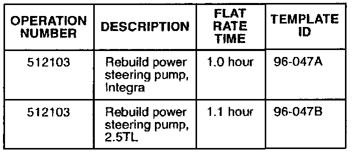
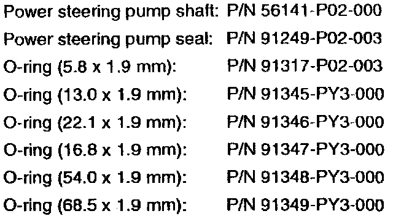

Power Steering Pump Leaks: Overview
October 29, 1996BULLETIN NO.
96-047
YEAR
1994 - 95 INTEGRA
1996 2.5TL
MODEL
ALL
VIN APPLICATION
See VEHICLES AFFECTED
Power Steering Pump Leaks
SYMPTOM
Power steering fluid is leaking from the front of the pump. On the Integra, the leak shows up as a thin line of oil on the underside of the hood above the pump. On the 2.5TL, look for an oily residue on the pump.
PROBABLE CAUSE
Incorrect machining of the power steering pump shaft has caused premature wear of the seal.
VEHICLES AFFECTED
1994 Integra: All
1995 Integra:
4-door RS, LS - Thru VIN JH4DB7...SS01494B
4-door GS-R - Thru VIN JH4DB8...SS003397
3-door RS, LS - Thru VIN JH4DC4...SS035792
3-door GS-R - Thru VIN JH4DC2...SS010297
1996 2.5TL - Thru VIN JH4UA2...TC009934
WARRANTY CLAIM INFORMATION
In warranty:
The normal warranty applies.

Failed P/N: 56110-P72-004
Defect code: 060
Contention code: B06
Out of warranty:
Any repair performed after warranty expiration may be eligible for goodwill consideration by the District Technical Manager or your Zone Office. You must request consideration, and get a decision, before starting work.

PARTS INFORMATION
REQUIRED MATERIALS
Genuine Honda
Power Steering Fluid: P/N 08206-9002
Steering grease: P/N 08733-B070E
Degreaser: P/N 08732-0020B